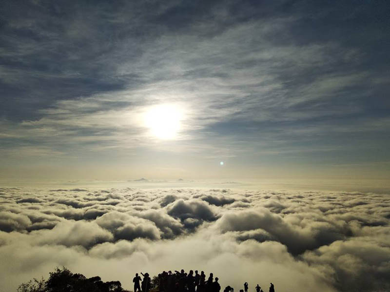

Skandagiri Hills, or Kalavara Durga is a famous mountain fortress located about 62 kms from Bangalore in the state of Karnataka. With the advancement of technology and internet, Skandagiri Hills in Bangalore have garnered thousands of admirers throughout the world. The distance from Skandagiri to Nandi Hills is about 19 km and it may take up to 20 minutes to travel by car. Trekking in Skandagiri Hills Bangalore is known for several trekking options. While the rugged yet picturesque terrain was a chic spot for nature lovers, it is fast becoming a tourist hotspot for adventure enthusiasts as well. The trekking adventures which makes Skandagiri Hills extremely exciting are now also done after the night sets in. Owing to the simple and well organised trails, a Skandagiri trek is ideal for first-timers.Get ready for adrenaline boost while covering the 10 km sunrise trek. The trek begins after 10 pm when night has fallen. This moderately difficult trek can be taken up by any individual. After reaching the Papagani Temple, tourists might find the trek to be tiring as the steep terrain begins from here. However, climbing up and witnessing the first light from above the hills is the major driving force which doesn’t let the enthusiasts stop. While trekking up one will also come across remains Tipu Sultan’s fortress.
|

|
After completing the 10 km Skandagiri Hills trekking, one can rest around the bonfire set at the top and indulge in some eatables which they might have carried with themselves. If there is much time for sunrise when can repose in their sleeping bags. Wake up to the most exquisite sunrise, and capture the sight of the the first light touching the hills above the misty clouds. This charming scenery of Skandagiri Hills leaves a lasting impression on every tourist. There are old ruins of the fortress of Tipu Sultan and dilapidated ancient fort ruins. That adds a haunting appeal to this trek. Skandagiri hill which overlooks Nandi Hills is also known as Kalwarbetta or Kalavara Durga. Walking among clouds here is an experience to relish. At night, you can enjoy a bonfire and camp under the sky and marvel at the unparalleled view of the morning sun. BEST TIME TO VISITAnytime is a good time for this trek. Winter, that is from November to January, is usually considered the best time to go on this trek. On a winter’s night, nothing quite beats the stargazing after a difficult climb and in monsoons, the flora and fauna provide a fresh appeal to the trek. Summer trek to Skandagiri is doable if you have the stamina to withstand the treacherous summer heat of South India. |
Quick Facts:
Location: Chikkaballapura, Karnataka
Starting Point: Kalwara Village
End Point: Skandagiri Hilltop
Altitude: Approximately 1350 metres
Trek Time: 5 hours
Distance: 8kms
Difficulty Level: Easy to moderate
Starting time: 4:00 AM
The way to catch up the blissful view of a sunrise from Skandagiri:
-Just a guy who travels and shares his experience